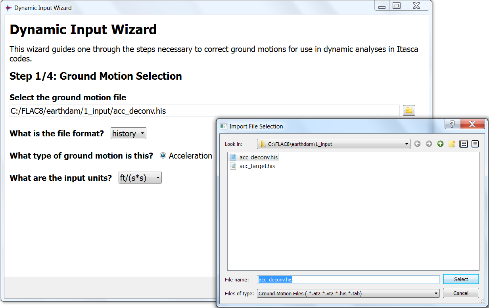
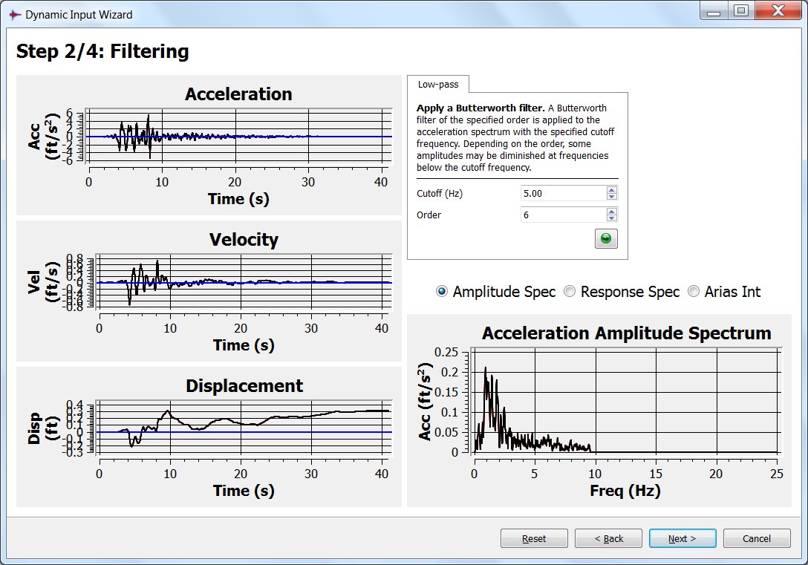
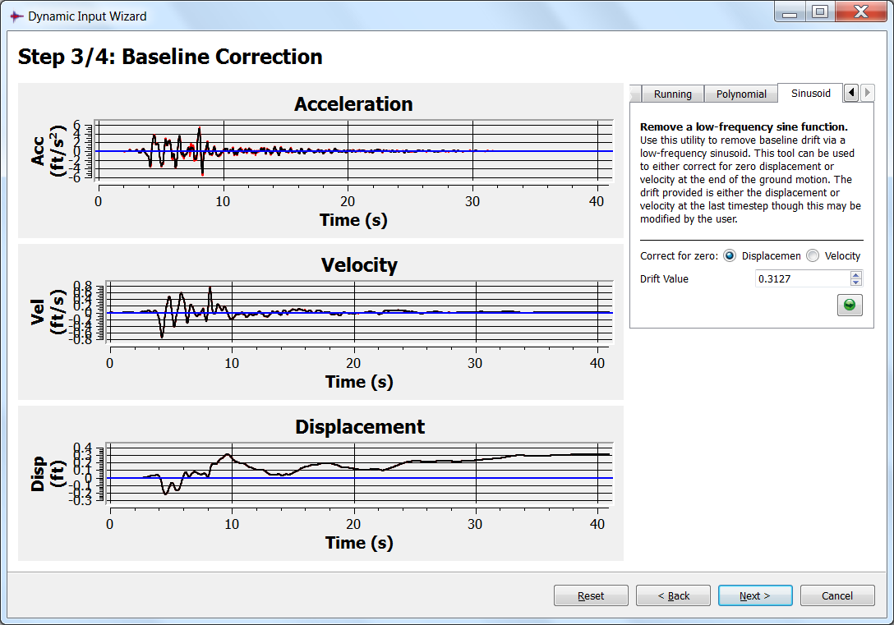
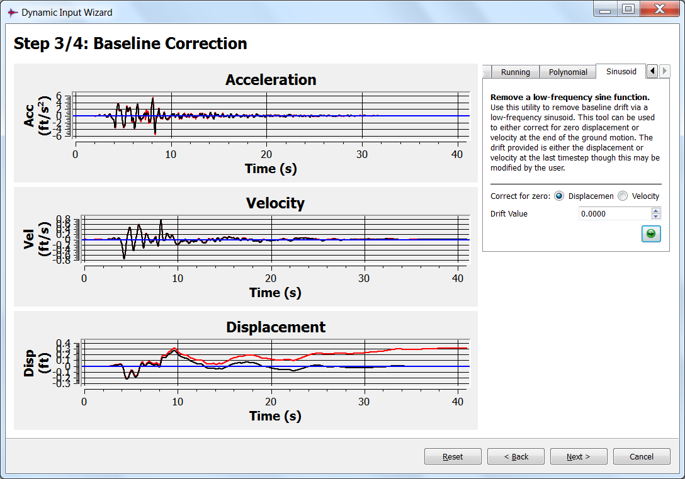
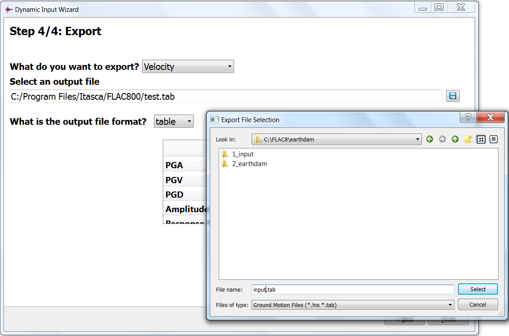

动力输入向导
此处介绍 动力输入向导（可从菜单 打开）的一个示例用法。
采用与加利福尼亚州 1987 年 Loma Prieta 地震数据相对应的地震加载。输入记录（即反卷积分析得到的上行波运动；本例中使用 SHAKE-91 估算与目标（地表）运动相对应的深度处合适运动）存储在名为“ACC DECONV.HIS”的文件中。 输入中的估计峰值加速度约为 5.8 ft/sec2。
[CS：为省略第一幅 FLAC 图，对 FLAC 原有的前几段作了改动]
第 1 步：将数据文件导入向导
要导入反卷积分析得到的上行波运动，请按下“打开文件”（黄色文件夹）按钮。选择输入文件（本例中为“ACC_DECONV.HIS”），然后按下“选择”按钮（，见下图）。选择文件格式“history”，将地面运动类型设为“Acceleration”，并选择英制单位（ft/s2）。按下“下一步”按钮继续滤波。


图 1：将输入导入向导
第 2 步：滤波
对输入的加速度记录积分得到速度记录，再对其积分得到位移记录。这些记录显示在窗口的左侧区域。
对输入加速度记录进行快速傅里叶变换（FFT）分析，可得到如下图所示的幅值谱：


图 2：原始输入记录、幅值谱与滤波器
该图表明主导频率约为 1 Hz，最高频率成分低于 10 Hz，且大部分频率低于 5 Hz。输入的大部分能量集中在较低频率成分中。应用截止频率为 5 Hz 的巴特沃斯型低通滤波器以去除 5 Hz 以上的频率成分。按下圆形的绿色“Start”按钮（ ）后，输入记录会被更新，如下所示。
）后，输入记录会被更新，如下所示。

图 3：滤波后的输入记录与幅值谱
第 3 步：基线校正
按下上图所示的“下一步”按钮后，将出现基线校正窗口。提供四个选项卡窗格以执行基线校正。首先按下 Mean 选项卡以去除平均加速度。若地面运动已被校正，则这一步可能不需要。接着通过低频正弦函数去除位移漂移。如下图所示，最终位移漂移约为 0.3 ft。


图 4：基线校正前的波形
按下“Start”按钮（）后，漂移被去除，最终位移被校正为零，如下所示。


图 5：基线校正后的波形
第 4 步：导出用于动力分析的数据
按下“保存”按钮可保存处理后的数据。这会打开“Export File Selection”对话框；本例中将文件命名为“INPUT.TAB”并按下“Select”。选择“Velocity”作为导出运动类型，输出设为“Table”。按下 Export 按钮导出数据（图示见下图）。


图 6：将处理后的速度保存到表中
| 这些内容对您有帮助吗？… | FLAC3D © 2019, Itasca | 原文更新于 2020 年 10 月 8 日 |
| 版权与免责声明 | ||